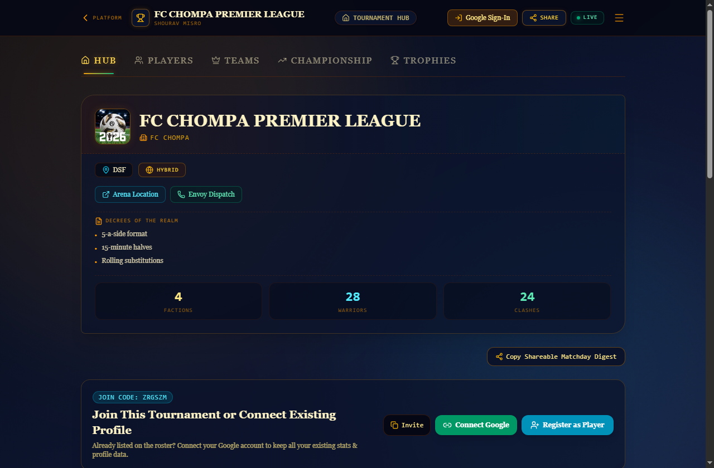

Guide • By ArenaPro Editorial • 5 min read
How to Organize a Local Football or Turf Tournament from Scratch (2026 Step-by-Step Checklist)
Key Takeaways
- Hybrid format (short round-robin + Semi-Finals & Final) delivers the highest engagement for 6 to 8 teams in a single weekend or multi-week turf league.
- Always set a Max Players cap with an automatic Waitlist—dropouts happen in nearly 15% of amateur signups.
- Publish tiebreaker rules (Goal Difference vs. Head-to-Head) and knockout penalty rules before Matchday 1 to avoid disputes.
1. Pick the Right Format for Your Team Count & Turf Hours
The biggest mistake new organizers make is booking turf hours before calculating total matches. A 4-team single round-robin takes 6 matches; a 6-team round-robin takes 15 matches; an 8-team round-robin takes 28 matches.
For 4–5 teams, a double round-robin League plus a Grand Final guarantees every squad plays plenty of minutes. For 6–12 teams, a Hybrid format (group stage followed by Quarter-Finals or Semi-Finals) keeps lower-ranked teams alive late into the event.
2. Replace Chat Signups with Structured Registration & Waitlists
Collecting names in a messaging thread leads to missing positions, duplicate entries, and unpaid spots. Instead, share a single Join Code link where players submit their preferred position, jersey number, and payment reference.
Setting a hard capacity cap (for example, 28 players for four 7-a-side squads) with an automatic waitlist ensures late applicants can fill last-minute injuries without scrambling.

3. Lock Matchday Attendance & Share Live Standings
Two hours before kickoff, use per-match RSVP check-ins so captains know who is Going, Late, or Out. After each game, enter goals, assists, and clean sheets right away so players see live Golden Boot and standings movement on their phones.
Frequently Asked Questions
How many players should each squad have for a 7-a-side turf tournament?
Aim for 9 to 10 players per squad (7 starters plus 2–3 rolling substitutes) to cover fatigue and minor knocks across multiple matches.
What is the best format for a one-day 6-team tournament?
Two groups of 3 teams playing 2 group matches each (6 matches total), followed by Semi-Finals and a Final (3 knockout matches), fits comfortably into a 4–5 hour turf booking.